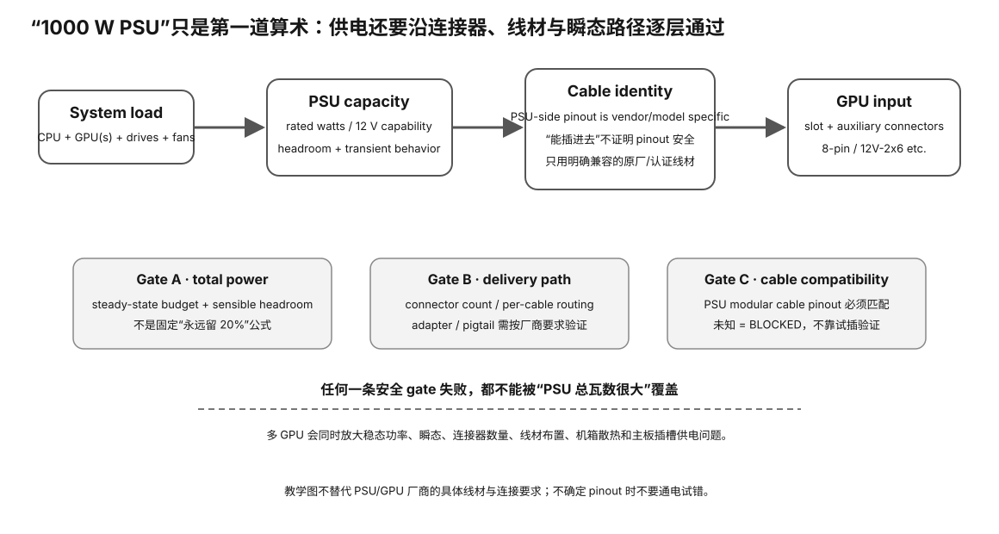

开始前，你应该知道 PSU 的总额定瓦数只是一个入口指标，还要同时检查 GPU/CPU/整机负载、瞬态余量、12V 供电能力、连接器类型、线材分配与厂商限制。
你淘到一张高功耗二手 GPU，机箱里已经有“1000W 电源”，看起来容量很大；但如果连接器不匹配、单路/线材分配不合适、瞬态余量太小或整机其他部件占用过多，系统仍可能在负载下掉电或不稳定。
真正的问题是：这套电源与线材能否在不改线、不冒险的前提下，为整机提供足够的持续与瞬态 headroom，并满足 GPU 厂商规定的连接方式？若证据不完整，结论应是 BLOCKED，而不是“先插上试试”。

PSU = 1000W
不等于：
任意一根线都能给 GPU 1000W
GPU + CPU/platform + storage/fans + other devices = estimated DC load
例如：
300 + 180 + 70 = 550W
850W PSU 的算术余量：
300W ≈35.3%
因为还有：
transient / power excursion connector path cable compatibility PSU protection/rail design thermal condition
余量是你的 policy 输入。
不同：
PSU GPU multi-GPU upgrade plan workload
都可能需要不同策略。
PSU-side plug fits != pinout compatible
Seasonic/Corsair 官方都明确要求检查具体 PSU/线材兼容性。
不同品牌，甚至同品牌不同系列，都可能不兼容。
1000W capacity 600W estimated load but wrong modular cable → REJECT / STOP
剩余 400W 没任何意义。
PCIe slot + auxiliary GPU connector(s)
不要假设：
少插一根线 → 主板插槽会自动补回来
当前 PCI-SIG 资料里，12V-2x6 是 CEM 5.1 定义、替代 12VHPWR 的连接器方案。
但：
看到 16-pin != 可以随便按一个固定功率用
GPU、PSU、线材、sense/实现都要匹配。
不要背：
一根双头永远可以 or 一根双头永远不可以
看 exact PSU + GPU manufacturer guidance。
GPU0 300W GPU1 300W platform 220W = 820W
850W PSU 只剩：
30W ≈3.5%
在一个要求更多 headroom 的 policy 下，应当 REVIEW。
nvidia-smi / vendor board power != wall power
墙上电表还包含：
CPU/RAM/主板/风扇/PSU loss
PSU port → physical cable → branch → GPU connector
每根线写清楚型号/来源/兼容性证据。
关机、断开市电后，只检查外部可见部分：
是否完全插入 烧蚀/变色 熔化 线材损伤 异常弯折/拉力
看到烧蚀/电弧痕迹：
STOP USE
拆 PSU 外壳 测裸露市电 短接/绕过保护 故意过载 自制高压测试
PSU 内部不是“垃圾佬低风险实验区”。
capacity gate + connector/cable gate + ordinary workload evidence → ACCEPT / REVIEW / REJECT
硬件门槛：L0 模型/设计主路径；真机实验按页面对应 L1–L3。
成本：0 元教学主路径；不要求购买、拆修或高风险改造。
风险：默认 safe；涉及 PSU/硬件时只做只读调查与厂商手册约束下的正常安装，不做带电拆装。
做 Experiment 88：PSU power-budget model；真实机器做 Experiment 89：real PSU/platform dossier。
做一份真实或假设整机 power dossier：GPU/CPU/其他负载、PSU 型号/额定、接头与线材路径、余量、已知限制、UNKNOWN；任何具体接线必须以该 PSU/GPU 厂商手册为准。
换 GPU、模型或平台后，从 hard gates 重新算，不继承旧机器的 PASS；任何新未知都回到 evidence collection，而不是靠经验口头补齐。
Gate A: total capacity Gate B: connector/cable compatibility Gate C: sustained ordinary workload behavior
三道都通过，才有资格说“供电方案可接受”。任何一道硬失败，都不能被另外两道的好成绩抵消。
estimated load = 700W PSU rating = 1200W headroom = large BUT: modular GPU cable provenance unknown
这时容量算术非常漂亮，但 cable pinout/兼容性属于安全关键 UNKNOWN，因此应该 BLOCKED，直到找到 exact PSU/cable 厂商证据。
PSU 端模块化接口没有跨品牌统一 pinout 保证。课程只接受具体型号的厂商兼容表、原厂线材标识或等价可靠来源，不接受“接口一样”。
平均功率低于额定值不代表所有瞬时功率变化都能被系统稳定处理。真正判断仍需要 exact GPU/PSU guidance 与正常 workload 下的稳定性证据，而不是故意制造危险过载。
PSU port → cable → branch → connector → GPU
除了总瓦数，还要确认每张卡实际如何取电、线材是否共享、厂商是否允许该接法。
容量足够只是必要条件，不是充分条件。安全关键 cable/connector provenance 不明确时，整机方案保持 BLOCKED。